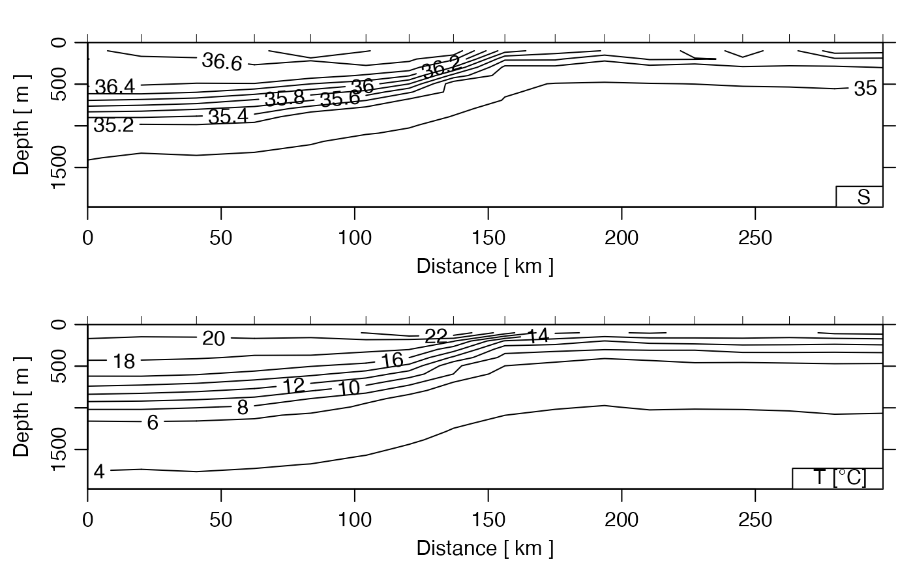
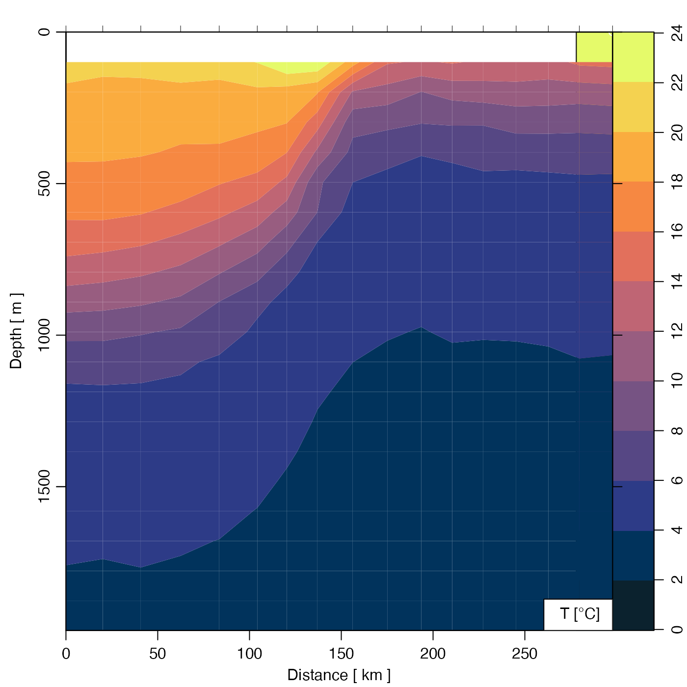
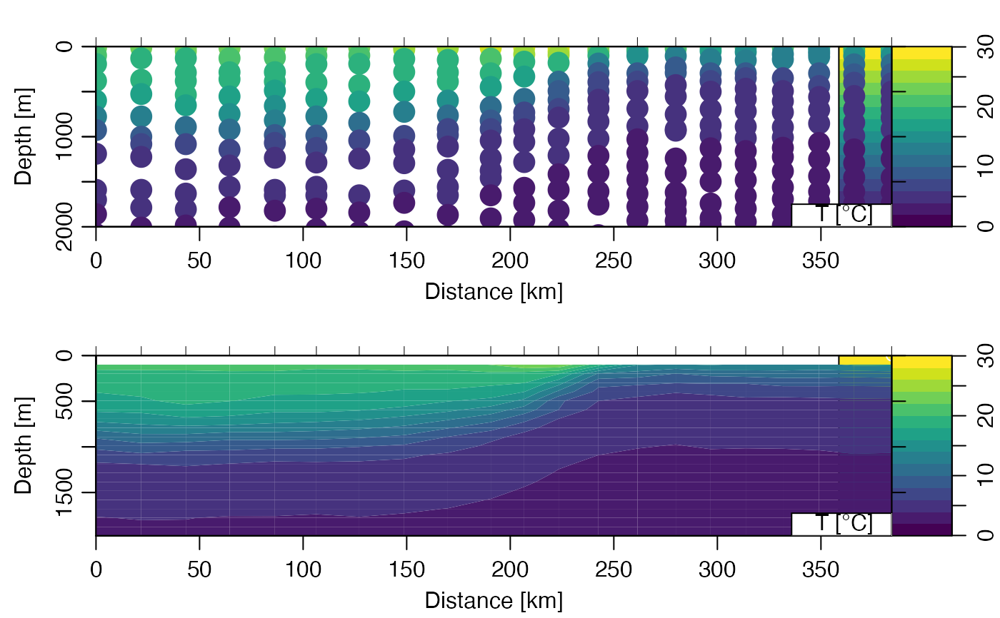

Creates a summary plot for a CTD section, with one panel for each value of
which.
# S4 method for section plot( x, which = c(1, 2, 3, 99), eos, at = NULL, labels = TRUE, grid = FALSE, contourLevels = NULL, contourLabels = NULL, stationIndices, coastline = "best", xlim = NULL, ylim = NULL, zlim = NULL, map.xlim = NULL, map.ylim = NULL, clongitude, clatitude, span, projection = NULL, xtype = "distance", ytype = "depth", ztype = "contour", longitude0, latitude0, zbreaks = NULL, zcol = NULL, legend.loc = "bottomright", showStations = FALSE, showStart = TRUE, stationTicks = TRUE, showBottom = TRUE, drawPalette = TRUE, axes = TRUE, mgp, mar, col, cex, pch, labcex = 1, debug, ... )
| x | a section object. |
|---|---|
| which | a list of desired plot types, as explained in “Details”.
There may be up to four panels in total, and the desired plots are placed in
these panels, in reading order. If only one panel is plotted, |
| eos | Character indication of the seawater equation of state
to use. The permitted choices are |
| at | If |
| labels | Either a logical, indicating whether to put labels on the x axis,
or a vector that is a list of labels to be placed at the x positions indicated
by |
| grid | If |
| contourLevels | Optional contour levels. |
| contourLabels | Optional contour labels. |
| stationIndices | Optional list of the indices of stations to use. Note
that an index is not a station number, e.g. to show the first 4
stations, use |
| coastline | Either a coastline object to be used,
or a string. In the second case, the permitted
choices are |
| xlim | Optional limit for x axis (only in sections, not map). |
| ylim | Optional limit for y axis (only in sections, not map) |
| zlim | Optional two-element numerical vector specifying the
limit on the plotted field. This is used only if |
| map.xlim, map.ylim | Optional limits for station map; |
| clongitude, clatitude, span | Optional map centre position and span (km). |
| projection | Parameter specifying map
projection; see |
| xtype | Type of x axis, for contour plots, either |
| ytype | Type of y axis for contour plots, either |
| ztype | String indicating whether to how to indicate the "z"
data (in the R sense, i.e. this could be salinity, temperature, etc; it does
not mean the vertical coordinate) The choices are: |
| longitude0, latitude0 | Location of the point from which distance is measured.
These values are ignored unless |
| zbreaks, zcol | Indication of breaks and colors to be used if |
| legend.loc | Location of legend, as supplied to |
| showStations | Logical indicating whether to draw station numbers on maps. |
| showStart | Logical indicating whether to indicate the first station with |
| stationTicks | A logical value indicating whether to indicate station
locations with ticks at the top margin of cross-section plots. Setting this
parameter to |
| showBottom | An indication of whether (and how) to indicate the ocean bottom.
If |
| drawPalette | Logical value indicating whether to draw a palette when |
| axes | Logical value indicating whether to draw axes. |
| mgp | A 3-element numerical vector to use for |
| mar | Value to be used with |
| col | Color, which defaults to |
| cex | Numerical character-expansion factor, which defaults to |
| pch | Indication of symbol type; defaults to |
| labcex | Size of characters in contour labels (passed to
|
| debug | an integer specifying whether debugging information is
to be printed during the processing. This is a general parameter that
is used by many |
| ... | Optional arguments passed to the contouring function. |
If the original section was gridded, the return value is that section. Otherwise, the gridded section that was constructed for the plot is returned. In both cases, the value is returned silently. The purpose of returning the section is to enable subsequent processing of the grid, including adding elements to the plot (see example 5).
The type of plot is governed by which, as follows.
which=0 or "potential temperature" for temperature contours
which=1 or "temperature" for temperature contours (the default)
which=2 or "salinity" for salinity contours
which=3 or "sigmaTheta" for sigma-theta contours
which=4 or "nitrate" for nitrate concentration contours
which=5 or "nitrite" for nitrite concentration contours
which=6 or "oxygen" for oxygen concentration contours
which=7 or "phosphate" for phosphate concentration contours
which=8 or "silicate" for silicate concentration contours
which=9 or "u" for eastward velocity
which=10 or "uz" for vertical derivative of eastward velocity
which=11 or "v" for northward velocity
which=12 or "vz" for vertical derivative of northward velocity
which=20 or "data" for a dot for each data location
which=99 or "map" for a location map
The y-axis for the contours is pressure, plotted in the conventional reversed
form, so that the water surface appears at the top of the plot. The x-axis is
more complicated. If at is not supplied, then the routine calculates x
as the distance between the first station in the section and each of the other
stations. (This will produce an error if the stations are not ordered
geographically, because the contour() routine cannot handle
non-increasing axis coordinates.) If at is specified, then it is taken
to be the location, in arbitrary units, along the x-axis of labels specified by
labels; the way this works is designed to be the same as for
axis().
The documentation for section explains the structure of section objects, and also outlines the other functions dealing with them.
Other functions that plot oce data:
plot,adp-method,
plot,adv-method,
plot,amsr-method,
plot,argo-method,
plot,bremen-method,
plot,cm-method,
plot,coastline-method,
plot,ctd-method,
plot,gps-method,
plot,ladp-method,
plot,landsat-method,
plot,lisst-method,
plot,lobo-method,
plot,met-method,
plot,odf-method,
plot,rsk-method,
plot,satellite-method,
plot,sealevel-method,
plot,tidem-method,
plot,topo-method,
plot,windrose-method,
plot,xbt-method,
plotProfile(),
plotScan(),
plotTS(),
tidem-class
Other things related to section data:
[[,section-method,
[[<-,section-method,
as.section(),
handleFlags,section-method,
initializeFlagScheme,section-method,
read.section(),
section-class,
sectionAddStation(),
sectionGrid(),
sectionSmooth(),
sectionSort(),
section,
subset,section-method,
summary,section-method
library(oce) data(section) sg <- sectionGrid(section) ## 1. start of section, default fields. plot(head(section))## 2. Gulf Stream GS <- subset(section, 109<=stationId&stationId<=129) GSg <- sectionGrid(GS, p=seq(0, 2000, 100)) plot(GSg, which=c(1, 99), map.ylim=c(34, 42))par(mfrow=c(2, 1)) plot(GS, which=1, ylim=c(2000, 0), ztype='points', zbreaks=seq(0,30,2), pch=20, cex=3) plot(GSg, which=1, ztype='image', zbreaks=seq(0,30,2))par(mfrow=c(1, 1)) ## 3. Image, with colored dots to indicate grid-data mismatch. if (FALSE) { plot(GSg, which=1, ztype='image') T <- GS[['temperature']] col <- oceColorsJet(100)[rescale(T, rlow=1, rhigh=100)] points(GS[['distance']],GS[['depth']],pch=20,cex=3,col='white') points(GS[['distance']],GS[['depth']],pch=20,cex=2.5,col=col) } if (FALSE) { ## 4. Image of Absolute Salinity, with 4-minute bathymetry ## It's easy to calculate the desired area for the bathymetry, ## but for brevity we'll hard-code it. Note that download.topo() ## caches the file locally. f <- download.topo(west=-80, east=0, south=35, north=40, resolution=4) t <- read.topo(f) plot(section, which="SA", xtype="longitude", ztype="image", showBottom=t) } if (FALSE) { ## 5. Temperature with salinity added in red s <- plot(section, which="temperature") distance <- s[["distance", "byStation"]] depth <- s[["station", 1]][["depth"]] salinity <- matrix(s[["salinity"]], byrow=TRUE, nrow=length(s[["station"]])) contour(distance, depth, salinity, col=2, add=TRUE) }